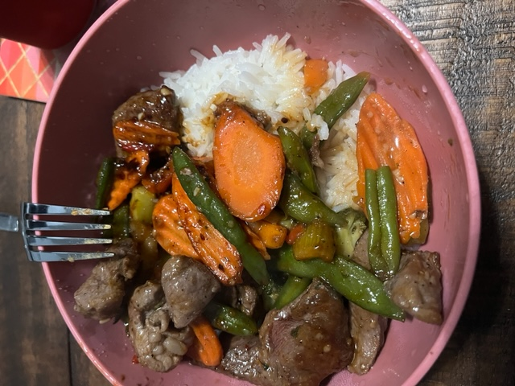

Beef Stir Fry
Let's learn how to make Beef Stir Fry!

Description
This dish is easy to cook and only has a few ingredients. You can easily cook this on a busy night when you want something healthy but flavorful.
This dish uses jasmine rice at the base. Jasmine rice provides a rich, flavorful rice that will mix well with the sweetness and tanginess of the stir fry sauce you will use with the vegetables of your choice (I have some great recommendations below!) and the beef.
Shopping List
- Jasmine Rice
- Beef for Stew
- Frozen stir fry vegetable mix
- Trader Joe's General Tsao Stir Fry Sauce
- Garlic Salt
- Pepper
- Ginger
Directions
Now we will make the sir fry. You will cook the rice separately from the rest of the ingredients. The meat and veggies can be cooked while the rice is cooking.
- In a rice cooker, add rice and water to the rice cooker according to the package directions.If rice finishes early leave it in the rice cooker in the Warm setting while you cook the rest of your items so it is still warm when you serve it!
- Heat a suate pan or wok to medium heat.We'll just refer to this as the pan for the rese of the recipe.
- While skillet is heating, season beef with garlic salt, ginger, and pepper. When done seasoning and skillet/wok is warm, move to pan.
- Let each side brown, flip as needed.Once all sides are browned and meat is cooked, put to side in bowl. Do not drain, leave juices in the pan.
- Add frozen vegetables to pan. Stir frequently, until almost cooked through.
- Add Stir Fry Sauce to veggies. Mix. Continue cooking.
- Add meat back to pan with vegetables and sauce. Add more sauce if desired. Leave in pan until meat is warm again.
- Begin plating: Add rice to bowl. Add veggies and meat on top.